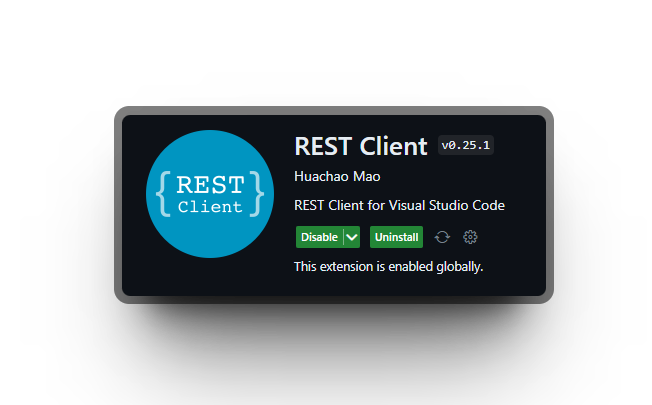

CRUD se refiere a las 4️⃣ operaciones básicas que se pueden realizar en una base de datos 📂 o en la capa de persistencia de un software
Estas operaciones son la base de la mayoría de las aplicaciones web
npm install express postgres zod cors dotenv
npm install @types/node @types/express @types/cors
Acabamos de crear un "endpoint"
Pero primero que es REST API ?
Pero primero que es REST API ?
Que es GET, POST, PATCH, DELETE
Pero primero que es REST API ?
Que es GET, POST, PATCH, DELETE
Pero primero que es REST API ?
Representational State Transfer es una Arquitectura de Software
Pero primero que es REST API ?
Representational State Transfer es una Arquitectura de Software
Se basa en 6 Principios
Se basa en 6 Principios
Se basa en 6 Principios
Se basa en 5 Principios
Se basa en 5 Principios
Se basa en 5 Principios
Se basa en 5 Principios
Pero cuales son los fundamentos ?
-> por ejemplo un libro o un usuario o una coleccion de recursos
-> cada recurso se identifica con una url
-> para definir las operaciones que se pueden realizar con los recursos
-> json, xml, html, ...
-> el servidor no debe mantener ningun estado sobre el cliente entre solicitudes
-> las url siempre tienen que hacer lo mismo
-> permite que el cliente y el servidor evolucione de forma separada
Para eso creamos un nuevo archivo para que todo quede mas organizado
// controllers/notes.js
export class NotesController {
static getAll = async (req, res) => {};
static getById = async (req, res) => {};
static create = async (req, res) => {};
static update = async (req, res) => {};
static delete = async (req, res) => {};
}
// controllers/notes.js
export class NotesController {
static getAll = async (req, res) => {
const { name } = req.query;
const articles = await sql`SELECT * FROM notes;`;
const filteredArticles = articles.filter((article) =>
article.name.toLowerCase().includes(name.toLowerCase())
);
res.json(filteredArticles);
};
static getById = async (req, res) => {};
static create = async (req, res) => {};
static update = async (req, res) => {};
static delete = async (req, res) => {};
}
// controllers/notes.js
export class NotesController {
static getAll = async (req, res) => {...};
static getById = async (req, res) => {
const { id } = req.params;
const note = await sql`SELECT * FROM notes WHERE id = ${id}`;
if (!note) res.status(404).json({ message: "Note not found" });
return res.json(note);
};
static create = async (req, res) => {};
static update = async (req, res) => {};
static delete = async (req, res) => {};
}
// controllers/notes.js
export class NotesController {
static getAll = async (req, res) => {...};
static getById = async (req, res) => {...};
static create = async (req, res) => {
const result = validateArticle(req.body);
if (result.error)
return res
.status(422)
.json({ error: JSON.parse(result.error.message) });
const { name, date, desc } = result.data;
const [{ uuid: id }] = await sql`SELECT gen_random_uuid() uuid;`;
await sql`
INSERT INTO notes ("id", "name", "date", "desc")
VALUES (${id}, ${name}, ${date}, ${desc}),
`;
const note = await sql`SELECT * FROM notes WHERE id = ${id}`;
if (!note)
return res.status(400).json({ error: "Error while creating note" });
res.status(201).json(note);
};
static update = async (req, res) => {};
static delete = async (req, res) => {};
}
// controllers/notes.js
export class NotesController {
static getAll = async (req, res) => {...};
static getById = async (req, res) => {...};
static create = async (req, res) => {...};
static update = async (req, res) => {
const result = validatePartialArticle(req.body);
if (result.error)
return res
.status(422)
.json({ error: JSON.parse(result.error.message) });
const { id } = req.params;
const note = await sql`SELECT * FROM notes WHERE id = ${id}`;
const updatedNote = {
...note,
...result.data,
};
const { name, date, desc } = updatedNote;
await sql`
UPDATE notes
SET name = ${name},
date = ${date},
desc = ${desc},
WHERE id = ${id}
`;
return res.json(updatedNote);
};
static delete = async (req, res) => {};
}
// controllers/notes.js
export class NotesController {
static getAll = async (req, res) => {...};
static getById = async (req, res) => {...};
static create = async (req, res) => {...};
static update = async (req, res) => {...};
static delete = async (req, res) => {
const { id } = req.params;
const result = await sql`DELETE FROM notes WHERE id = ${id}`;
if (!result) return res.status(404).json({ message: "Note not found" });
return res.json({ message: "Note deleted " });
};
}
Si usas vscode
(Read) Obten las notas
GET http://localhost:3000/notes
(Read) Obten una nota por id
GET http://localhost:3000/notes/[id]
(create) Crea una nota
POST http://localhost:3000/notes
Content-Type: application/json
{
"name": "Prueba",
"date": "2023-11-20",
"brand": "Estudiar todo"
}
(update) Actualiza una nota
PATCH http://localhost:3000/notes/[id]
Content-Type: application/json
{
"name": "Prueba Nueva"
}
(delete) Elimina una nota
DELETE http://localhost:3000/notes/[id]
vimos como
vimos como
vimos como
vimos como
vimos como
vimos como